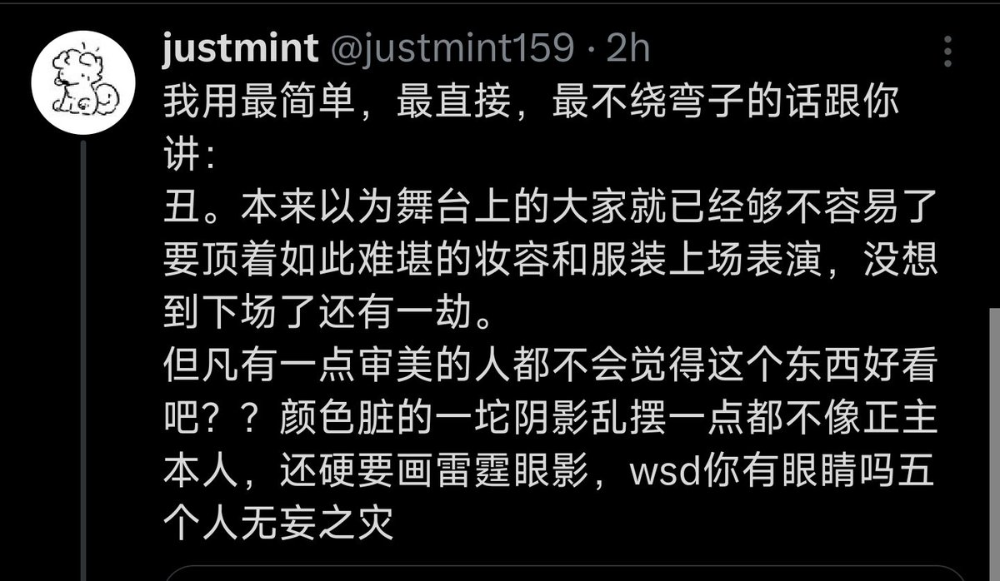
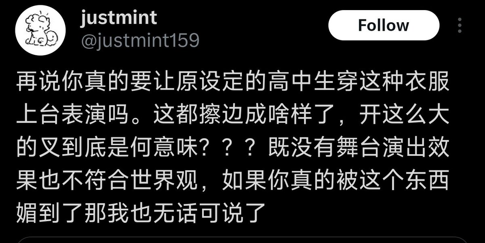

穗_🌾
@Sui_aini
不带羊宫妃那说不了话了，羊宫妃那是你们的奶嘴吗?


poppinzhang
@cn_LittleYu
笑死，动不动就是“高中生设定”，武士道这些乐队线下演出，你怎么不喊动画里的角色名字，喊乐手真名？😅
实现中都是成年人，非要在这帮死肥宅处男小鬼面前装清纯。🤣
老子听个金属还不能有硬核装造，是不是得穿个蓬蓬裙给你甩头看？
这么喜欢清纯的滚去看 MyGO 好了，让羊宫妃那装给你看。🖕 https://t.co/oNzDCBZt6m https://t.co/TwVUudbLU5